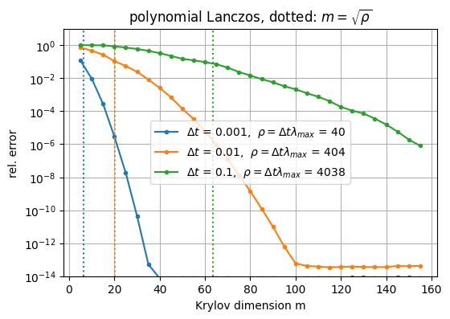
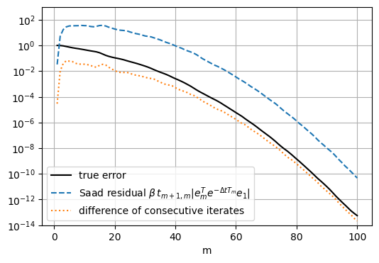
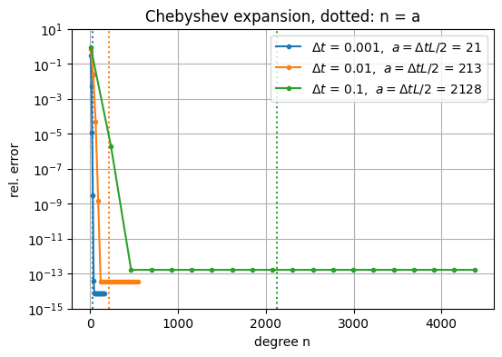
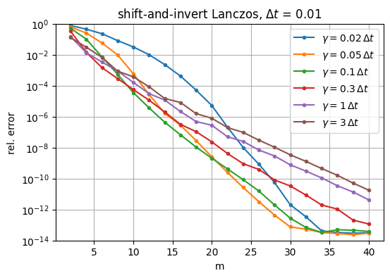
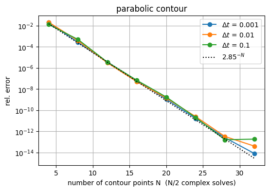
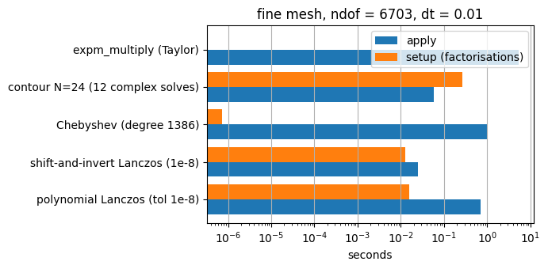

Exponential integrators in NGSolve — Part 2: computing \(e^{-tA}v\) for a large sparse FE operator#
Alternatives to the shift-and-invert Lanczos method of Part 1, compared with the finite element cost model in mind: a product with \(A = M^{-1}K\) costs one mass matrix solve, a solve with \(I + \gamma A\) one back-substitution with a factorisation of \(M + \gamma K\), and complex shifts need complex factorisations.
method |
needs |
iterations for tolerance \(\varepsilon\) |
mesh dependent? |
|---|---|---|---|
polynomial Lanczos (Saad, Hochbruck–Lubich) |
products with \(A\) |
\(\approx \sqrt{\Delta t\lambda_{\max}} + O(\log 1/\varepsilon)\) |
yes |
truncated Taylor, |
products with \(A\) |
\(\propto \Delta t\lambda_{\max}\) |
yes |
Chebyshev expansion |
products with \(A\), bound for \(\lambda_{\max}\) |
\(\approx \Delta t\lambda_{\max}/2 + O(\log 1/\varepsilon)\) |
yes |
shift-and-invert Lanczos |
one factorisation of \(M+\gamma K\) |
10–30 |
no |
contour integral (Weideman–Trefethen) |
\(N/2\) complex factorisations |
\(N = 16\)–\(32\) |
no |
The helpers are collected in expint_tools.py one directory up.
import sys; sys.path.insert(0, "..")
from ngsolve import *
from ngsolve.webgui import Draw
from ngsolve.krylovspace import CGSolver
import numpy as np, scipy.linalg as sla, scipy.sparse.linalg as spla
import matplotlib.pyplot as plt
from time import time as walltime
from expint_tools import phi, krylov_funm, KrylovExp, ContourExp, chebyshev_exp, lanczos_spectral_bound, DenseReference
ngsglobals.msg_level = 0
Setup#
Same problem as in Part 1 on two meshes. Coarse mesh: dense eigenproblem as reference. Fine mesh: shift-and-invert Lanczos with tolerance \(10^{-13}\), cross-checked against the contour integral.
def setup(maxh):
mesh = Mesh(unit_square.GenerateMesh(maxh=maxh))
fes = H1(mesh, order=3, dirichlet=".*")
u, v = fes.TnT()
K = BilinearForm(grad(u)*grad(v)*dx, symmetric=False).Assemble().mat
M = BilinearForm(u*v*dx, symmetric=False).Assemble().mat
fesc = H1(mesh, order=3, dirichlet=".*", complex=True) # for complex shifts
uc, vc = fesc.TnT()
Kc = BilinearForm(grad(uc)*grad(vc)*dx, symmetric=False).Assemble().mat
Mc = BilinearForm(uc*vc*dx, symmetric=False).Assemble().mat
gfu = GridFunction(fes)
gfu.Set(exp(-100*((x-0.3)**2 + (y-0.6)**2)) + IfPos((x-0.5)*(0.8-x), 1, 0)*IfPos((y-0.2)*(0.5-y), 1, 0))
gfu.vec.data = Projector(fes.FreeDofs(), True) * gfu.vec
invM = M.Inverse(fes.FreeDofs(), inverse="sparsecholesky")
tmp = M.CreateColVector()
def applyA(z): # z -> M^{-1} K z
out = M.CreateColVector(); tmp.data = K*z; out.data = invM*tmp; return out
return dict(mesh=mesh, fes=fes, K=K, M=M, Kc=Kc, Mc=Mc, freedofs=fes.FreeDofs(), freedofsc=fesc.FreeDofs(),
u0=gfu.vec, invM=invM, applyA=applyA, ndof=fes.ndof)
coarse, fine = setup(0.1), setup(0.04)
ref = DenseReference(coarse["K"], coarse["M"], coarse["freedofs"])
for name, P in [("coarse", coarse), ("fine", fine)]:
P["lam_max"] = lanczos_spectral_bound(P["applyA"], P["M"], P["u0"], m=40) / 1.05
print(f"{name} mesh: ndof = {P['ndof']:5d}, lambda_max ~ {P['lam_max']:.3e}")
print(f"coarse mesh, dense: lambda_max = {ref.lam[-1]:.3e}")
coarse mesh: ndof = 1096, lambda_max ~ 4.038e+04
fine mesh: ndof = 6703, lambda_max ~ 2.526e+05
coarse mesh, dense: lambda_max = 4.038e+04
1. Polynomial Lanczos#
Hochbruck–Lubich (1997): with \(\rho = \Delta t\lambda_{\max}\) the error is \(\lesssim 10\,e^{-m^2/(5\rho)}\) for \(\sqrt{4\rho} \le m \le 2\rho\) — nothing happens before \(m \approx \sqrt\rho\), then convergence is superlinear. Since \(\lambda_{\max} \sim h^{-2}\), \(m\) grows like \(\sqrt{\Delta t}/h\).
dts = [1e-3, 1e-2, 1e-1]
plt.figure(figsize=(6, 4))
for dt in dts:
ex = ref.apply(lambda l: np.exp(-dt*l), ref.to_np(coarse["u0"]))
ms = list(range(5, 160, 5)); errs = []
for m in ms:
errs.append(ref.relerr(krylov_funm(coarse["applyA"], coarse["M"], coarse["u0"], lambda th: np.exp(-dt*th), maxm=m, tol=0), ex))
rho = dt*ref.lam[-1]
l, = plt.semilogy(ms, errs, "o-", ms=3, label=rf"$\Delta t$ = {dt:g}, $\rho = \Delta t\lambda_{{max}}$ = {rho:.0f}")
plt.axvline(np.sqrt(rho), color=l.get_color(), ls=":")
plt.ylim(1e-14, 10); plt.xlabel("Krylov dimension m"); plt.ylabel("rel. error"); plt.grid(); plt.legend()
plt.title(r"polynomial Lanczos, dotted: $m = \sqrt{\rho}$"); plt.show()

Iterations for tolerance \(10^{-8}\) on the two meshes (\(h\) halved: \(m\) doubles):
print(f"{'dt':>8s} {'coarse m':>10s} {'fine m':>8s}")
for dt in dts:
ms = []
for P in (coarse, fine):
E = KrylovExp(P["M"], P["K"], dt, P["freedofs"], poly=True, tol=1e-8, maxm=400)
(E * P["u0"]).Evaluate(); ms.append(E.info["m"])
print(f"{dt:8g} {ms[0]:10d} {ms[1]:8d}")
dt coarse m fine m
0.001 27 61
0.01 74 178
0.1 2 2
Error estimation#
From \(AV_m = V_mT_m + t_{m+1,m}v_{m+1}e_m^T\), the residual of \(y_m(t) = \beta V_m e^{-tT_m}e_1\) as a solution of \(y' = -Ay\) is \(\|r_m(t)\|_M = \beta\, t_{m+1,m}\, |e_m^T e^{-tT_m}e_1|\) (Saad 1992), usually within a factor 10 of the true error. krylov_funm uses the difference of consecutive approximations instead; both are compared here.
dt = 1e-2
ex = ref.apply(lambda l: np.exp(-dt*l), ref.to_np(coarse["u0"]))
M, v, applyA = coarse["M"], coarse["u0"], coarse["applyA"]
beta = sqrt(InnerProduct(v, M*v)); V = MultiVector(v, 0); V.Append((1/beta)*v)
maxm = 100; T = np.zeros((maxm+1, maxm)); saad, diffs, true = [], [], []; Eold = np.zeros(0)
for j in range(maxm):
h = np.array(V.AppendOrthogonalize(applyA(V[j]), ipmat=M)).ravel(); T[:j+2, j] = h[:j+2]
th, Q = sla.eigh(T[:j+1, :j+1]); E = beta * (Q @ (np.exp(-dt*th) * Q[0, :]))
saad.append(beta*abs(h[j+1]*E[-1]) / beta) # Saad residual (relative)
diffs.append(np.linalg.norm(E - np.append(Eold, np.zeros(j+1-len(Eold)))) / beta); Eold = E
true.append(ref.relerr((V[0:j+1]*Vector(E)).Evaluate(), ex))
plt.figure(figsize=(6, 4)); plt.semilogy(range(1, maxm+1), true, "k-", label="true error")
plt.semilogy(range(1, maxm+1), saad, "--", label="Saad residual $\\beta\\, t_{m+1,m} |e_m^T e^{-\\Delta t T_m} e_1|$")
plt.semilogy(range(1, maxm+1), diffs, ":", label="difference of consecutive iterates")
plt.ylim(1e-14, 1e3); plt.xlabel("m"); plt.grid(); plt.legend(); plt.show()

2. Truncated Taylor series: scipy.sparse.linalg.expm_multiply#
Al-Mohy–Higham (2011): scaling \(e^{-tA} = (e^{-tA/s})^s\) plus a Taylor polynomial of degree \(\le 55\), with \(s\) chosen from 1-norm estimates. Matrix-free and robust, but the number of products with \(A\) is proportional to \(\rho\) rather than \(\sqrt\rho\). It accepts a LinearOperator; the transpose \(KM^{-1}\) is needed for the norm estimate.
def expm_multiply_FE(P, dt, count=[0]):
M, K, invM, n = P["M"], P["K"], P["invM"], P["ndof"]
tmpK, tmpM, out = M.CreateColVector(), M.CreateColVector(), M.CreateColVector()
count[0] = 0
def matvec(z): # M^{-1} K z (numpy in, numpy out)
count[0] += 1; tmpK.FV().NumPy()[:] = np.asarray(z).ravel(); tmpM.data = K*tmpK; out.data = invM*tmpM
return out.FV().NumPy().copy()
def rmatvec(z): # K M^{-1} z
count[0] += 1; tmpK.FV().NumPy()[:] = np.asarray(z).ravel(); tmpM.data = invM*tmpK; out.data = K*tmpM
return out.FV().NumPy().copy()
Aop = spla.LinearOperator((n, n), matvec=matvec, rmatvec=rmatvec, dtype=float)
res = P["u0"].CreateVector()
res.FV().NumPy()[:] = spla.expm_multiply(-dt*Aop, P["u0"].FV().NumPy(), traceA=-dt*float(np.sum(ref.lam)) if P is coarse else None)
return res, count[0]
for dt in dts:
ex = ref.apply(lambda l: np.exp(-dt*l), ref.to_np(coarse["u0"]))
t0 = walltime(); res, nmv = expm_multiply_FE(coarse, dt); t1 = walltime() - t0
print(f"expm_multiply, coarse mesh, dt = {dt:g}: {nmv:5d} products with A, rel. error {ref.relerr(res, ex):.1e}, {t1:.2f} s")
expm_multiply, coarse mesh, dt = 0.001: 504 products with A, rel. error 7.0e-15, 0.06 s
expm_multiply, coarse mesh, dt = 0.01: 1475 products with A, rel. error 4.1e-14, 0.17 s
expm_multiply, coarse mesh, dt = 0.1: 11252 products with A, rel. error 2.7e-13, 1.25 s
3. Chebyshev expansion#
For a spectrum in \([0, L]\), with \(s = (2\lambda - L)/L\) and \(a = \Delta tL/2\),
(\(I_k\) modified Bessel functions, \(c_0\) halved). The three-term recurrence needs three vectors and no inner products — GPU friendly — but the degree grows like \(a \approx \rho/2\), and \(L \ge \lambda_{\max}\) must be safe, otherwise the recurrence blows up. lanczos_spectral_bound obtains \(L\) from a few Lanczos steps.
L = lanczos_spectral_bound(coarse["applyA"], coarse["M"], coarse["u0"], m=30)
print(f"spectral bound L = {L:.4e} (true lambda_max = {ref.lam[-1]:.4e})")
plt.figure(figsize=(6, 4))
for dt in dts:
ex = ref.apply(lambda l: np.exp(-dt*l), ref.to_np(coarse["u0"]))
a = dt*L/2; degs = np.unique(np.linspace(5, 2*a + 120, 20).astype(int)); errs = []
for n in degs:
errs.append(ref.relerr(chebyshev_exp(coarse["applyA"], coarse["u0"], dt, L, int(n)), ex))
l, = plt.semilogy(degs, errs, "o-", ms=3, label=rf"$\Delta t$ = {dt:g}, $a = \Delta t L/2$ = {a:.0f}")
plt.axvline(a, color=l.get_color(), ls=":")
plt.ylim(1e-15, 10); plt.xlabel("degree n"); plt.ylabel("rel. error"); plt.grid(); plt.legend(); plt.title("Chebyshev expansion, dotted: n = a"); plt.show()
spectral bound L = 4.2565e+04 (true lambda_max = 4.0378e+04)

4. Shift-and-invert Lanczos#
Van den Eshof–Hochbruck (2006): the error is bounded by the best rational approximation of \(e^{-\Delta t\lambda}\) with a single \(m\)-fold pole, independent of \(\lambda_{\max}\). Guidance for the shift: \(\gamma \approx \Delta t/10\) for tolerances around \(10^{-6}\), smaller for tighter ones; a large \(\gamma\) still converges, but slowly. Changing \(\gamma\) means a new factorisation.
dt = 1e-2
ex = ref.apply(lambda l: np.exp(-dt*l), ref.to_np(coarse["u0"]))
plt.figure(figsize=(6, 4))
for gfac in [0.02, 0.05, 0.1, 0.3, 1.0, 3.0]:
E = KrylovExp(coarse["M"], coarse["K"], dt, coarse["freedofs"], gamma=gfac*dt, tol=0)
ms = list(range(2, 41, 2)); errs = []
for m in ms:
E.maxm = m; errs.append(ref.relerr((E*coarse["u0"]).Evaluate(), ex))
plt.semilogy(ms, errs, "o-", ms=3, label=rf"$\gamma = {gfac:g}\,\Delta t$")
plt.ylim(1e-14, 1); plt.xlabel("m"); plt.ylabel("rel. error"); plt.grid(); plt.legend(); plt.title(rf"shift-and-invert Lanczos, $\Delta t$ = {dt:g}"); plt.show()

print("Krylov dimension for tol = 1e-8 (gamma = dt/10):")
print(f"{'dt':>8s} {'coarse m':>10s} {'fine m':>8s}")
for dt in dts:
ms = []
for P in (coarse, fine):
E = KrylovExp(P["M"], P["K"], dt, P["freedofs"], tol=1e-8)
(E * P["u0"]).Evaluate(); ms.append(E.info["m"])
print(f"{dt:8g} {ms[0]:10d} {ms[1]:8d}")
Krylov dimension for tol = 1e-8 (gamma = dt/10):
dt coarse m fine m
0.001 15 19
0.01 19 19
0.1 14 14
Inexact inner solves#
The factorisation can be replaced by preconditioned CG (here with Jacobi). The accuracy is then limited by the inner tolerance, and maxm becomes the effective stop. The right-hand side must be projected onto the free dofs.
M, K, freedofs, v = coarse["M"], coarse["K"], coarse["freedofs"], coarse["u0"]
dt = 1e-2; gamma = 0.1*dt
ex = ref.apply(lambda l: np.exp(-dt*l), ref.to_np(v))
mstar = M.CreateMatrix(); mstar.AsVector().data = M.AsVector() + gamma*K.AsVector()
jac = mstar.CreateSmoother(freedofs)
Pfree = Projector(freedofs, True)
tmp = M.CreateColVector()
def g_exp(th):
with np.errstate(divide="ignore"): return np.exp(-dt*np.where(th > 0, (1/th - 1)/gamma, np.inf))
for cgtol in [1e-3, 1e-6, 1e-9, 1e-12]:
cg = CGSolver(mstar, jac, tol=cgtol, maxiter=500, printrates=False)
def opB(z):
out = M.CreateColVector(); tmp.data = M*z; tmp.data = Pfree*tmp; out.data = cg*tmp; return out
info = {}
yk = krylov_funm(opB, M, v, g_exp, maxm=40, tol=1e-10, info=info)
print(f"inner CG tol {cgtol:.0e}: Krylov dim {info['m']:2d}, rel. error {ref.relerr(yk, ex):.1e}")
inner CG tol 1e-03: Krylov dim 40, rel. error 1.6e-03
inner CG tol 1e-06: Krylov dim 40, rel. error 1.7e-06
inner CG tol 1e-09: Krylov dim 24, rel. error 1.2e-09
inner CG tol 1e-12: Krylov dim 24, rel. error 8.5e-11
5. Contour integrals#
Cauchy’s formula with a contour \(\Gamma\) around the negative spectrum of \(-A\):
On the parabola \(z(\theta) = \frac{N}{\Delta t}(0.1309 - 0.1194\,\theta^2 + 0.25\,i\theta)\), \(\theta \in (-\pi,\pi)\), the \(N\)-point midpoint rule converges like \(2.85^{-N}\) (Weideman–Trefethen 2007), and conjugate symmetry halves the work. The result is a rational approximation with \(N/2\) complex poles: \(N/2\) complex factorisations once, \(N/2\) back-substitutions per application, no inner products, trivially parallel. NGSolve needs the matrices on a complex=True space.
ContourExp.Phi uses the recursion \(\varphi_k(-\Delta tA) = -(\Delta tA)^{-1}\big(\varphi_{k-1}(-\Delta tA) - I/(k-1)!\big)\), because \(\varphi_k(\Delta t z)\) decays only like \(1/z\) along the contour.
Ns = [4, 8, 12, 16, 20, 24, 28, 32]
plt.figure(figsize=(6, 4))
for dt in dts:
ex = ref.apply(lambda l: np.exp(-dt*l), ref.to_np(coarse["u0"]))
errs = [ref.relerr((ContourExp(coarse["Mc"], coarse["Kc"], dt, coarse["freedofsc"], N=N, M=coarse["M"]) * coarse["u0"]).Evaluate(), ex) for N in Ns]
plt.semilogy(Ns, errs, "o-", label=rf"$\Delta t$ = {dt:g}")
plt.semilogy(Ns, [2.85**(-N) for N in Ns], "k:", label="$2.85^{-N}$")
plt.xlabel("number of contour points N (N/2 complex solves)"); plt.ylabel("rel. error"); plt.grid(); plt.legend(); plt.title("parabolic contour"); plt.show()
dt = 1e-2
C = ContourExp(coarse["Mc"], coarse["Kc"], dt, coarse["freedofsc"], N=24, M=coarse["M"])
g = (coarse["invM"] * coarse["u0"]).Evaluate()
for k in [1, 2]:
print(f"phi_{k} via contour (N=24): rel. error {ref.relerr(C.Phi(k, g), ref.apply(lambda l: phi(k, -dt*l), ref.to_np(g))):.1e}")

phi_1 via contour (N=24): rel. error 3.6e-12
phi_2 via contour (N=24): rel. error 1.7e-11
Best rational approximations (Carathéodory–Fejér, Trefethen–Weideman–Schmelzer 2006) need even fewer poles — \(10^{-14}\) with \(n = 14\) — and scipy.interpolate.AAA produces such approximants for any function.
6. The augmented matrix trick#
\(\exp\begin{pmatrix} T & b \\ 0 & 0\end{pmatrix} = \begin{pmatrix} e^{T} & \varphi_1(T)\, b \\ 0 & 1\end{pmatrix}\) (Sidje 1998, Al-Mohy–Higham 2011). expokit, phipm and KIOPS apply it to the large operator; we only need it for the small projected matrix, where the eigendecomposition gives the same result:
Tm = T[:20, :20] # from the Lanczos run above
aug = np.zeros((21, 21)); aug[:20, :20] = -dt*Tm; aug[:20, 20] = np.eye(20)[:, 0]
phi1_aug = sla.expm(aug)[:20, 20]
th, Q = sla.eigh(Tm); phi1_eig = Q @ (phi(1, -dt*th) * Q[0, :])
print(f"max difference between augmented-matrix and eigendecomposition phi_1(-dt T_m) e_1: {abs(phi1_aug - phi1_eig).max():.1e}")
max difference between augmented-matrix and eigendecomposition phi_1(-dt T_m) e_1: 5.4e-16
7. Comparison on the fine mesh#
Time per application of \(e^{-\Delta tA}\) at a tolerance of about \(10^{-8}\). Setup costs (factorisations) are paid once per run.
dt = 1e-2; P = fine
M, v = P["M"], P["u0"]
nrm = lambda w: sqrt(InnerProduct(w, M*w))
t0 = walltime(); Eref = KrylovExp(P["M"], P["K"], dt, P["freedofs"], tol=1e-13, maxm=100); yref = (Eref*v).Evaluate(); print(f"reference: SI Lanczos m = {Eref.info['m']}, {walltime()-t0:.2f} s")
t0 = walltime(); C32 = ContourExp(P["Mc"], P["Kc"], dt, P["freedofsc"], N=32, M=P["M"]); ycont = (C32*v).Evaluate(); print(f"cross-check: contour N=32, {walltime()-t0:.2f} s, rel. difference {nrm((yref-ycont).Evaluate())/nrm(yref):.1e}")
results = {}
def timeit(name, setup, apply):
t0 = walltime(); obj = setup(); ts = walltime() - t0
t0 = walltime(); res = apply(obj); ta = walltime() - t0
results[name] = (ts, ta, nrm((res - yref).Evaluate())/nrm(yref))
print(f"{name:32s} setup {ts:7.3f} s apply {ta:7.3f} s rel. error {results[name][2]:.1e}")
timeit("polynomial Lanczos (tol 1e-8)", lambda: KrylovExp(P["M"], P["K"], dt, P["freedofs"], poly=True, tol=1e-8, maxm=400), lambda E: (E*v).Evaluate())
timeit("shift-and-invert Lanczos (1e-8)", lambda: KrylovExp(P["M"], P["K"], dt, P["freedofs"], tol=1e-8), lambda E: (E*v).Evaluate())
Lf = lanczos_spectral_bound(P["applyA"], P["M"], v, m=40)
timeit(f"Chebyshev (degree {int(dt*Lf/2)+60})", lambda: None, lambda _: chebyshev_exp(P["applyA"], v, dt, Lf, int(dt*Lf/2)+60))
timeit("contour N=24 (12 complex solves)", lambda: ContourExp(P["Mc"], P["Kc"], dt, P["freedofsc"], N=24, M=P["M"]), lambda C: (C*v).Evaluate())
timeit("expm_multiply (Taylor)", lambda: None, lambda _: expm_multiply_FE(P, dt)[0])
reference: SI Lanczos m = 33, 0.06 s
cross-check: contour N=32, 0.43 s, rel. difference 8.0e-14
polynomial Lanczos (tol 1e-8) setup 0.016 s apply 0.694 s rel. error 7.6e-08
shift-and-invert Lanczos (1e-8) setup 0.013 s apply 0.025 s rel. error 9.2e-09
Chebyshev (degree 1386) setup 0.000 s apply 0.967 s rel. error 7.9e-14
contour N=24 (12 complex solves) setup 0.267 s apply 0.057 s rel. error 2.5e-11
/var/folders/mw/0_yqnltn6rbg1msz5s15_vgc0000gn/T/ipykernel_93239/2399729199.py:13: UserWarning: Trace of LinearOperator not available, it will be estimated. Provide `traceA` to ensure performance.
res.FV().NumPy()[:] = spla.expm_multiply(-dt*Aop, P["u0"].FV().NumPy(), traceA=-dt*float(np.sum(ref.lam)) if P is coarse else None)
expm_multiply (Taylor) setup 0.000 s apply 5.434 s rel. error 7.9e-14
names = list(results); ts = [results[n][0] for n in names]; ta = [results[n][1] for n in names]
plt.figure(figsize=(7, 3.5)); yy = np.arange(len(names))
plt.barh(yy - 0.2, ta, 0.4, label="apply"); plt.barh(yy + 0.2, ts, 0.4, label="setup (factorisations)")
plt.yticks(yy, names); plt.xscale("log"); plt.xlabel("seconds"); plt.legend(); plt.grid(axis="x"); plt.title(f"fine mesh, ndof = {P['ndof']}, dt = {dt}"); plt.tight_layout(); plt.show()

Summary#
Polynomial methods (Lanczos, Taylor, Chebyshev) need only products with \(A\), but their cost grows with \(\rho = \Delta t\lambda_{\max}\): \(\sqrt\rho\) for Lanczos, \(\rho\) for the others. Use them when no factorisation is affordable.
Shift-and-invert Lanczos: one factorisation of \(M + \gamma K\), 10–30 back-substitutions per step, mesh-independent.
Contour integrals: about 12 complex factorisations, no inner products, perfectly parallel, same poles for all \(\varphi_k\).
Not covered: restarted Krylov methods (Eiermann–Ernst 2006), Leja interpolation (Caliari et al.), rational Krylov with several poles (Güttel 2013), adaptive substepping as in expokit, phipm, KIOPS.
# tests
assert results["shift-and-invert Lanczos (1e-8)"][2] < 1e-7
assert results["contour N=24 (12 complex solves)"][2] < 1e-9
assert results["polynomial Lanczos (tol 1e-8)"][2] < 1e-6
assert results["Chebyshev (degree %d)" % (int(dt*Lf/2)+60)][2] < 1e-8
assert results["expm_multiply (Taylor)"][2] < 1e-8
assert nrm((yref-ycont).Evaluate())/nrm(yref) < 1e-10
print("all tests passed")
all tests passed
References: A. H. Al-Mohy, N. J. Higham, SIAM J. Sci. Comput. 33 (2011); J. van den Eshof, M. Hochbruck, SIAM J. Sci. Comput. 27 (2006); M. Hochbruck, C. Lubich, SIAM J. Numer. Anal. 34 (1997); Y. Saad, SIAM J. Numer. Anal. 29 (1992); L. N. Trefethen, J. A. C. Weideman, T. Schmelzer, BIT 46 (2006); J. A. C. Weideman, L. N. Trefethen, Math. Comp. 76 (2007); S. Güttel, GAMM-Mitt. 36 (2013). Full list with DOIs in the README.